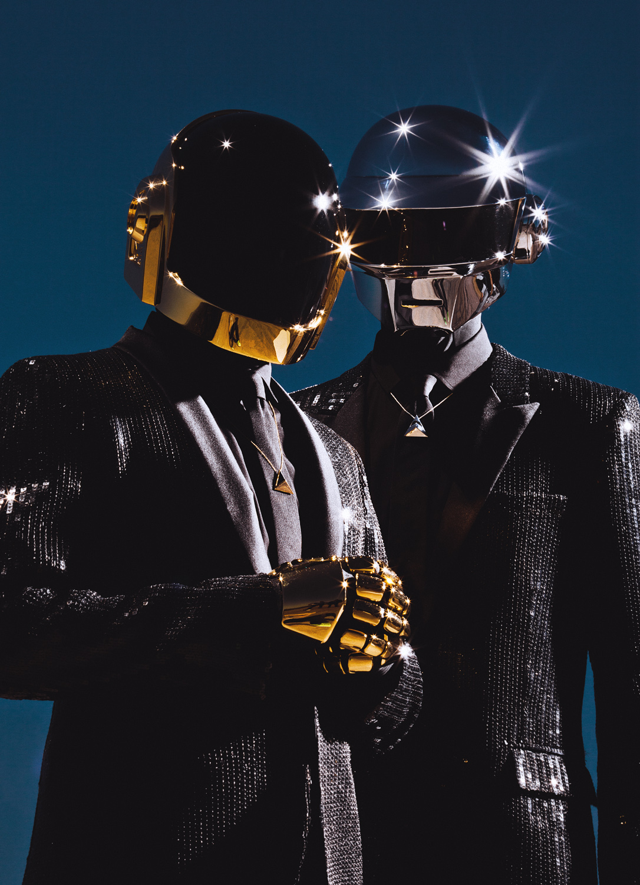

História Daft Punk

Daft Punk foi uma dupla francesa de música eletrônica formada em 1993, em Paris, na França, por Guy-Manuel de Homem-Christo e Thomas Bangalter. Eles alcançaram significativa popularidade no final dos anos 1990 como parte do movimento french house. Nos anos seguintes, consolidaram o sucesso combinando elementos de house com synthpop, disco, rock e techno. A dupla também é creditada pela produção de canções consideradas essenciais no panorama da french house. Eles encerraram suas atividades no dia 22 de fevereiro de 2021.
A dupla fez quatro álbuns durante sua carreira, incluíndo Homework (1997), Discovery (2001), Human After All (2005), Random Access Memories (2013). Random Access Memories bateu recorde de vendas e se tornou o álbum que teve mais cópias comercializadas em sua primeira semana de lançamento no Reino Unido. Apesar de as faixas de Random Access Memories terem vazado na internet, o álbum vendeu 165 000 exemplares em sete dias, número que colocou a dupla no topo das paradas britânicas pela primeira vez, segundo o Official Charts Company, orgão oficial da indústria fonográfica daquele país.
Get Lucky, primeiro single do novo álbum, ficou duas semanas seguidas entre os 20 primeiros da lista da Billboard Hot 100 e conta com a participação de Pharrell Williams.